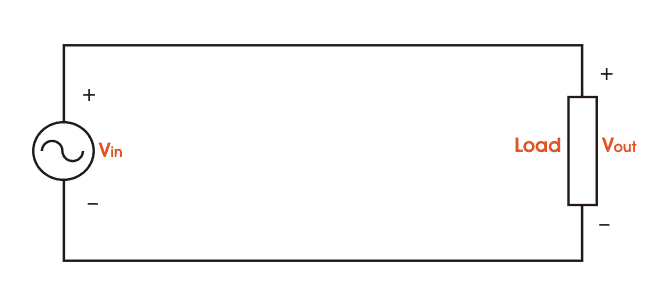
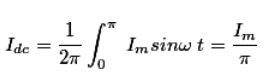
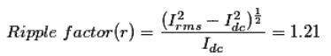
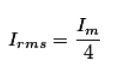

Electric current flows through a p - n junction diode when it is forward biased and we get output current through the load.
Let, we supply a sinusoidal voltage Vin = Vsinωt as a source voltage. Now, if the input voltage is positive, the diode is forward biased and when that is negative, the diode is in reverse bias condition.
When the input voltage is positive, i.e, for the positive cycle of the input voltage, the current flows through the diode. So, the current will flow through the load also and we obtain output voltage across the load. But for the negative half cycle of the input, the p-n junction get reverse biased and no current flows through the diode as a result we obtain zero current and zero voltage across the load.
Circuit Diagram of Half Wave Rectifier
The basic diagram of half wave diode rectifier is given below,
Half Wave Diode Rectifier
diode " width="666" height="302" class="aligncenter size-full wp-image-4633" />
Input voltage and Output Voltage Waveforms
Half Wave Rectified Waveform
Now, different parameters for half wave rectifier is given below
The average of load current (Idc) :
Let, the load current be iL = Imsinωt,

Ripple factor of half wave rectifier,

The rms value of the load current (Irms ),

 by
by {kind=link}
{kind=link}
{kind=link}
{kind=link}